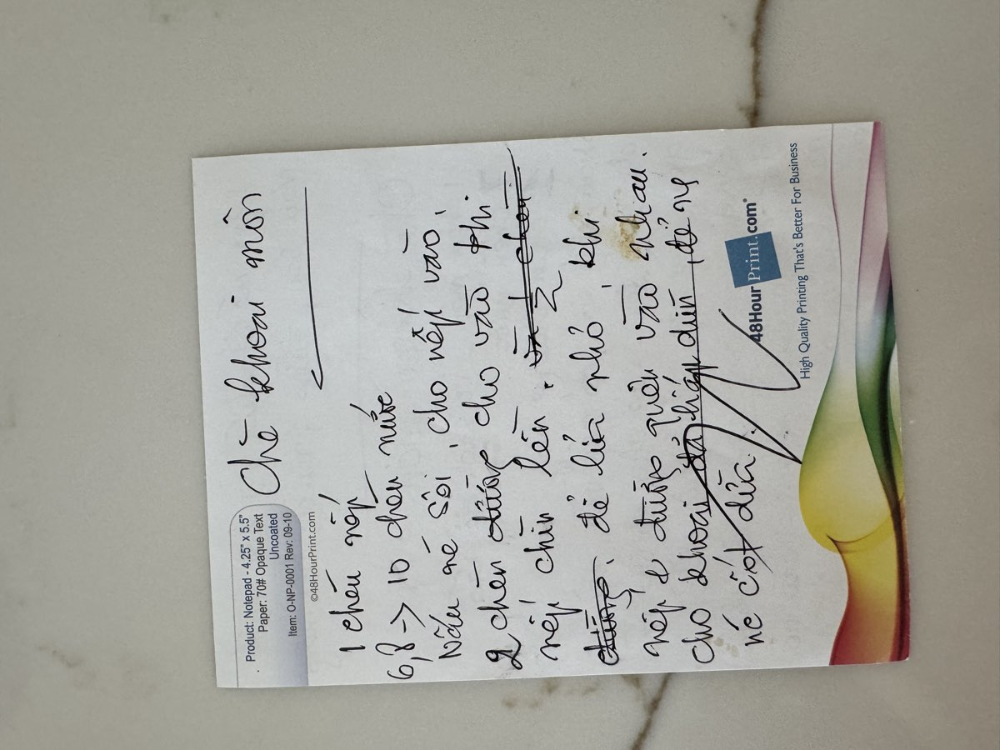

← Back to recipes

Chè Khoai Môn
Taro Sweet Soup
From Mẹ — Oanh
Nguyên liệu · Ingredients
- 1 pound taro (khoai môn), peeled and cut into 1-inch cubes
- 1 cup sticky rice (gạo nếp), rinsed
- 1 can (13.5 oz) coconut cream
- 3 cups sugar, or to taste
- 4–5 cups water
- 1 tablespoon butter
- ½ teaspoon salt
- Pandan leaves (optional)
Cách làm · Instructions
- Rinse the sticky rice and soak it for at least 1 hour. This helps it cook evenly and become properly soft in the chè.
- Peel the taro and cut it into bite-sized cubes, about 1 inch each. Steam the taro separately for 15–20 minutes until tender when pierced with a fork. Mẹ always steamed the taro rather than boiling it — this keeps the pieces from getting waterlogged and falling apart in the soup.
- In a large pot, combine the coconut cream with water and bring to a gentle boil. Add the drained sticky rice and stir. Reduce heat to medium-low and cook for 20–25 minutes, stirring occasionally so the rice doesn't stick to the bottom. The rice should be completely soft and the liquid creamy.
- Add the sugar, butter, and salt. Stir until the sugar dissolves and the butter melts in. The butter adds a richness that Mẹ loved — just a little goes a long way.
- Gently fold in the steamed taro cubes. Be careful not to stir too vigorously — you want the taro pieces to stay mostly intact, with just a few breaking down to thicken the chè and turn it that beautiful pale purple color.
- Simmer everything together for another 5–10 minutes. The chè should be thick and creamy, with visible pieces of taro throughout. Adjust sweetness to taste.
- Serve warm in bowls. You can drizzle a little extra coconut cream on top for a lovely presentation. This chè also tastes wonderful chilled the next day — the flavors deepen overnight.
Mẹ's tip
Choose taro with purple streaks running through the flesh — those have the best flavor and give the chè its beautiful lavender color. Mẹ would always pick through the taro at the Asian market, looking for the ones with the deepest purple veins. "Khoai tím mới ngon" — only the purple ones taste right.
Công thức gốc · Original handwritten recipe

❦
A recipe from Mẹ's kitchen